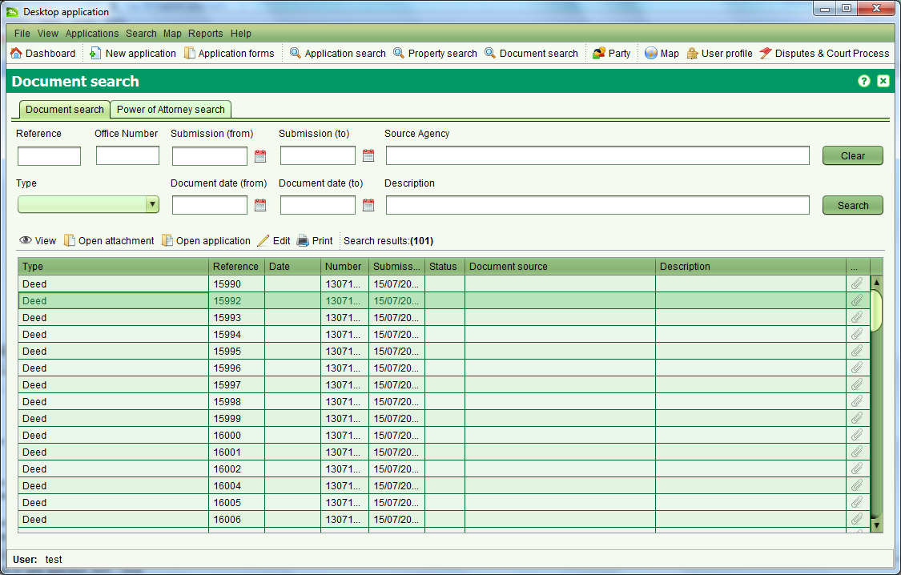

The Document Search screen allows you to find documents of interest for editing
or viewing. It can be accessed from the Search > Search Document menu or selecting


You can search by any combination of Reference, Office Number, Type, Submission date range Document date range, Source Agency or Description. The data applicable to each search field is as follows:
 Open attachment toolbar button can be used to open the image of the document
if an image has been linked to it. To edit the details of the document, select the
Open attachment toolbar button can be used to open the image of the document
if an image has been linked to it. To edit the details of the document, select the
A Power of Attorney is a legal document that authorises a person (attorney)
to act on behalf of another person (grantor) in private affairs, business
or some other legal matter. Power of Attorney documents can be registered
in SOLA and linked into applications to justify land transactions made by
the attorney on behalf of the grantor.
It is possible to search for registered Power of Attorney documents
using the Document search, however the Power of Attorney tab provides additional
search criteria allowing you to search for Power of Attorney documents using
the Attorney name or the name of the person the attorney is acting on behalf
of (i.e. grantor).
Both searches will return current and historic (i.e. canceled) Power
of Attorney documents however these searches exclude new Power of Attorney
documents that are not yet registered. To search for pending Power of Attorney
documents, use the Application Search to locate the document using the Document
reference number.
Also See